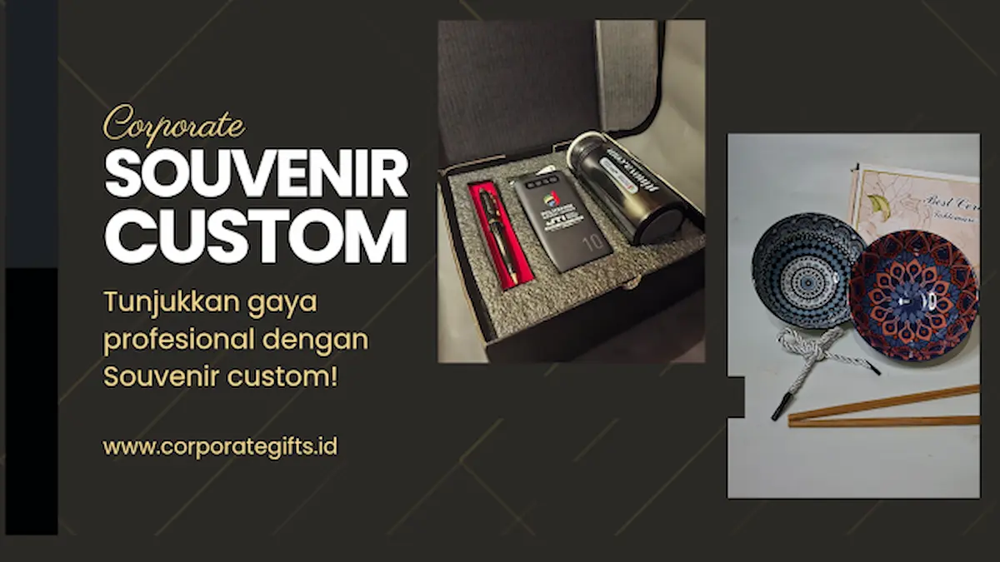

Mengapa Souvenir Kantor Masih Krusial untuk Branding Korporat?
Corporate Gifts ID - Bayangkan seorang mitra bisnis menerima kotak kaku bertekstur elegan bertuliskan inisial perusahaannya. Saat dibuka, ia menemukan tumbler vacuum flask berinsulasi tinggi dengan ukiran namanya, buku agenda kulit dengan sentuhan logo deboss yang halus, serta kartu ucapan apresiasi tulisan tangan. Dalam waktu kurang dari tiga detik, tercipta persepsi bahwa perusahaan Anda sangat menghargai relasi kemitraan tersebut.
Di tengah masifnya paparan iklan digital yang mudah terlewatkan dalam sekejap, cenderamata fisik memiliki kekuatan unik sebagai pengikat emosi (emotional anchor). Menurut riset tahunan Advertising Specialty Institute (ASI), lebih dari 83% penerima corporate gift sanggup mengingat identitas brand pengirim bahkan setelah 12 bulan berlalu. Penggunaan harian seperti tumbler di meja kantor atau tas laptop saat pertemuan dinas menciptakan eksposur berulang hingga 2,5 kali lipat lebih efektif dibandingkan banner iklan online.
Tren Utama Souvenir Kantor Kekinian 2026
Memasuki tahun 2026, preferensi korporasi bertransformasi secara signifikan. Souvenir kantor tidak lagi diposisikan sebagai sekadar alat promosi murah (giveaway biasa), melainkan cerminan budaya inovasi dan kepedulian lingkungan:
- Item Fungsional & Tech-Driven: Botol minum termos pintar dengan indikator suhu LED, powerbank wireless magnetik, wireless charging mousepad, dan earphone TWS berdesain compact.
- Desain Minimalis & Natural Tone: Pemilihan palet warna tanah (earth tone), abu-abu monokrom, dan hijau zaitun yang memberikan kesan tenang, bersih, serta profesional.
- Material Keberlanjutan (Eco-Friendly): Pemanfaatan bahan gabus alami (cork), serat gandum, bambu organik, serta kanvas katun daur ulang bersertifikasi ramah lingkungan.
- Kustomisasi Hybrid: Kombinasi teknik grafir laser presisi tinggi pada bagian logam dan print UV timbul warna penuh pada permukaan akrilik atau kulit.

Detail packaging box magnetik mewah dan kurasi item merchandise fungsional untuk klien.
Framework F.I.T. dalam Memilih Merchandise yang Tepat Sasaran
Agar pengadaan merchandise tidak menjadi beban inventaris yang sia-sia, terapkan metodologi F.I.T. sebelum menentukan pilihan produk:
- Function (Fungsi Nyata): Pastikan produk memiliki utilitas praktis tinggi dalam rutinitas kerja penerima. Hadiah yang jarang dipakai akan cepat terlupakan dan kehilangan nilai investasinya.
- Identity (Karakter Brand): Selaraskan elemen visual merchandise dengan panduan identitas (brand guideline) perusahaan Anda, mulai dari konsistensi warna hingga teknik penempatan logo yang proporsional.
- Timing (Ketepatan Jadwal): Rencanakan proses seleksi, proofing sampel, hingga produksi massal jauh-jauh hari untuk menghindari keterlambatan serah terima sebelum hari pelaksanaan acara.
3 Pilihan Paket Souvenir Kantor Berdasarkan Segmen Acara
Berikut kurasi paket merchandise kantor yang dapat disesuaikan dengan profil sasaran audiens:
- Paket Executive VIP: Hardbox magnetik eksklusif berisi tumbler stainless steel SUS 304 grafir laser, agenda kerja kulit bersampul deboss timbul, pulpen logam putar premium, dan kartu apresiasi personal. Cocok untuk dewan direksi dan relasi bisnis strategis.
- Paket Onboarding Karyawan Baru: Totebag kanvas tebal berfuring, kaos korporat cotton combed 24s berlogo bordir presisi, gantungan ID card lanyard kulit, dan mug enamel kantor. Membangun rasa memiliki sejak hari pertama bekerja.
- Paket Seminar & Konferensi: Tas seminar kit fungsional, buku catatan spiral A5, pulpen gel ramah lingkungan, serta flashdisk kartu custom logo. Solusi efisien untuk volume peserta skala ratusan hingga ribuan orang.
Tabel Rencana Aksi Pengadaan Souvenir Kantor (Framework 30/60/90 Hari)
Panduan terstruktur untuk divisi pengadaan (procurement) dan event organizer korporat dalam mengawal jadwal pengadaan:
| Periode Kerja | Fokus Tahapan Utama | Deliverables & Output Konkret |
|---|---|---|
| Fase 30 Hari Pertama | Penetapan Anggaran & Riset Konsep | Approval pagu RAB, kurasi 3 alternatif produk, dan pengajuan mockup digital vendor |
| Fase 60 Hari Berjalan | Finalisasi Sampel Fisik & Kontrak | Uji fisik sampel (golden proofing), penerbitan PO resmi, dan kick-off produksi massal |
| Fase 90 Hari Akhir | Quality Control, Distribusi & Evaluasi | Inspeksi batch QC, pengiriman aman ke venue, serta rekapitulasi data brand recall audiens |
Formulasi dan Cara Mengukur ROI Souvenir Kantor
Merchandise kantor bukan sekadar pos biaya operasional, melainkan instrumen investasi reputasi yang dapat dikuantifikasi efektivitasnya melalui tiga parameter kunci:
- Brand Recall Rate: Diukur melalui survei kepuasan singkat pasca-acara guna menguji persentase audiens yang mengingat pesan utama perusahaan.
- Social Media Engagement: Memantau lonjakan postingan unboxing sukarela dari klien atau staf di platform LinkedIn dan Instagram dengan tagar resmi korporasi.
- Conversion & Retention Impact: Membandingkan biaya pengadaan paket hadiah terhadap percepatan closing kontrak kemitraan baru (Cost per Acquisition / CPA).
Kesimpulan Praktis
Keberhasilan souvenir kantor kekinian terletak pada keharmonisan antara estetika modern, nilai kepraktisan pakai, serta kemasan yang menyajikan pengalaman unboxing berkesan. Melalui kurasi yang tepat, cinderamata perusahaan Anda akan bertransformasi menjadi representasi fisik yang memperkuat loyalitas klien dan kebanggaan tim kerja sepanjang tahun.
Wujudkan pengadaan merchandise korporat berkualitas bersama CorporateGifts.ID. Hubungi tim konsultan kami melalui form permintaan penawaran resmi (RFQ) atau jelajahi ratusan inspirasi gift set pada katalog Souvenir Kantor kami.
Pertanyaan Seputar Souvenir Kantor Kekinian (FAQ)

Ditulis oleh: Vendor Souvenir Kantor
Senior Corporate Merchandise ConsultantTim konsultan spesialis CorporateGifts.ID berpengalaman dalam formulasi strategi pengadaan cinderamata korporat, kurasi gift set VIP, teknik cetak industri, dan kemitraan B2B di Indonesia.
Lihat Profil Lengkap & Portofolio